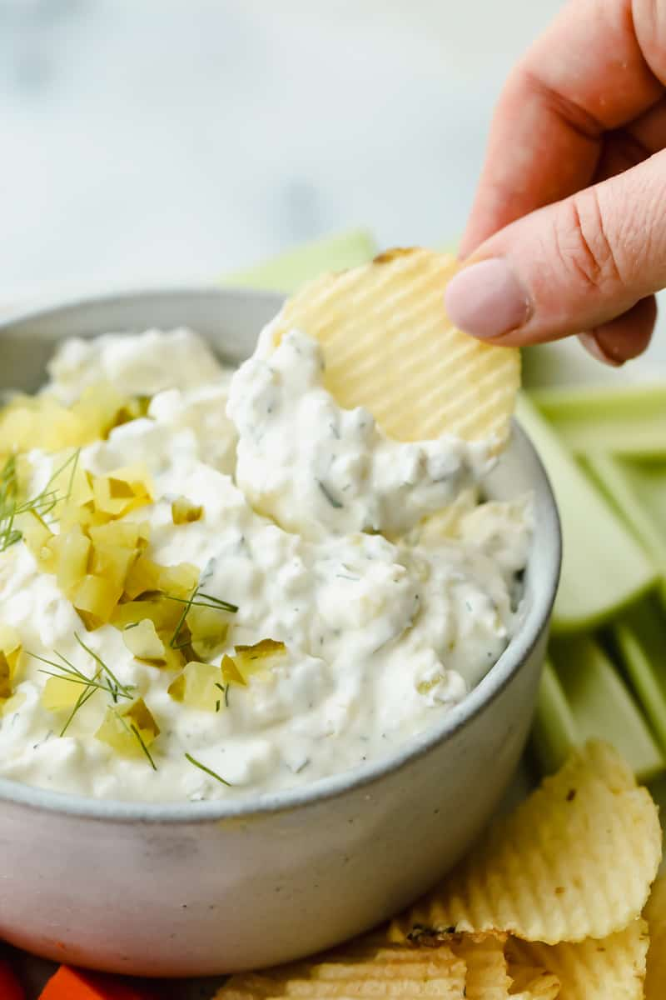

Dill Pickle Dip
Calling all pickle lovers! Loaded with chopped pickles and herbs,
this dill pickle dip is bursting with flavor and absolutely irresistible!
Grab your favorite bag of chips with a cold drink and enjoy!
~Prep Time~
- Prep: 15 mins
- Additional: 1 hour
- Serves: 12
- Yield: 1 1/2 cup
~Ingredients~
- 1 (8oz) package cream cheese (room temperature)
- 1 cup chopped dill pickles, or more to taste
- 1/4 cup finely chopped sweet onion
- 2 tablespoons of pickle juice
- 1 teaspoon dried dill weed
- 1/2 teaspoon kosher salt
- 1 pinch freshly ground black pepper
~Steps~
- Stir cream cheese in a bowl with a wooden spoon until smooth
- Stir in dill pickles, onion, pickle juice, dill weed, salt and pepper until evenly distributed
- Refrigerate before serving, at least 1 hour
